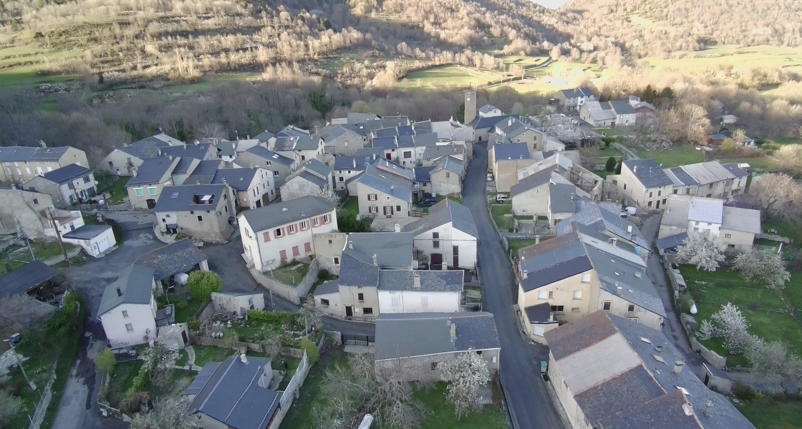
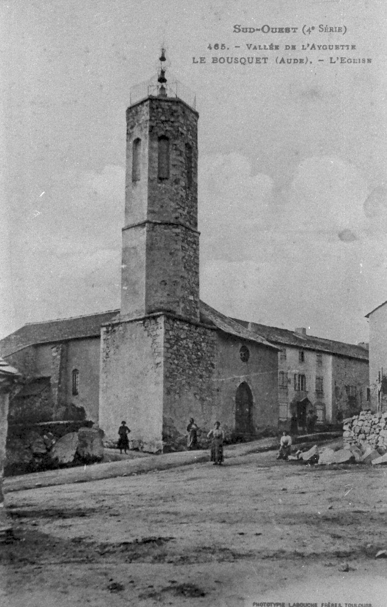
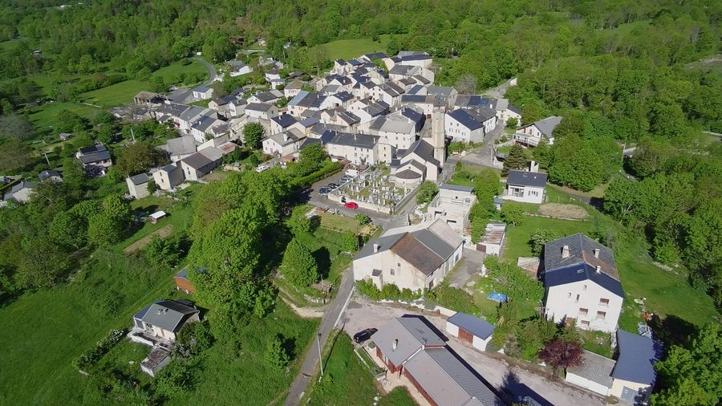
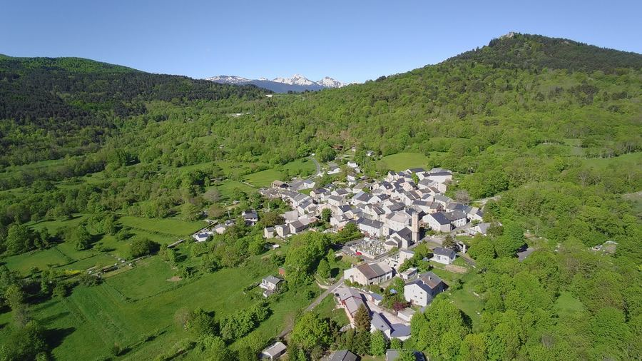

Aux portes du Donezan, dans la vallée de l'Ayguette, Le Bousquet vit au rythme des saisons, entre toits d'ardoise, forêts et sommets pyrénéens. Un site pensé pour faire vivre le village, aujourd'hui et demain.
Blotti au creux de la vallée de l'Ayguette, dans les Pyrénées audoises, Le Bousquet a conservé le charme des villages de moyenne montagne : maisons de pierre aux toits d'ardoise, ruelles étroites, et un clocher qui veille sur les toits depuis des générations.
Entouré de forêts et de prairies, le village s'ouvre sur des panoramas qui portent le regard jusqu'aux crêtes pyrénéennes. Un cadre préservé, entre nature et vie de village, que ce site a pour vocation de faire découvrir et de faire vivre.
Cette carte postale du début du XXe siècle (collection « Sud-Ouest », Phototypie Labouche Frères, Toulouse) montre le clocher de l'église du Bousquet, dominant déjà le village et la vallée de l'Ayguette. Faites glisser le curseur pour comparer avec le village aujourd'hui.

Le clocher de l'église, déjà emblématique du village, photographié par les Phototypie Labouche Frères de Toulouse.
Ruelles, maisons de pierre et toits d'ardoise composent un ensemble architectural typique des hautes vallées audoises.
Le village continue de vivre autour de son église et de sa place, entre mémoire du passé et projets pour l'avenir. [Section à compléter avec l'histoire précise du village, en lien avec la mairie et les archives locales]
La vallée de l'Ayguette et les massifs environnants offrent un terrain de jeu naturel pour la randonnée, l'observation de la faune et le grand air. Cette section a vocation à recenser les sentiers, boucles et points de vue autour du village.
Une balade familiale au départ de l'église, à travers ruelles et abords du village. [Distance et durée à préciser]
Un parcours au fil de l'eau et des forêts environnantes, entre ombre et clairières. [Itinéraire à détailler]
Depuis les hauteurs autour du village, la vue porte jusqu'aux crêtes pyrénéennes enneigées une bonne partie de l'année.
Les rouages de la vie quotidienne du Bousquet — à personnaliser avec les informations à jour de la mairie et des associations locales.
Horaires d'ouverture, contact et démarches administratives. [Coordonnées et horaires à compléter]
Comité des fêtes, association du patrimoine, club de randonnée… [Liste des associations et contacts à ajouter]
Producteurs locaux, hébergements, gîtes et points de service utiles aux habitants et visiteurs. [À recenser]
Ramassage des déchets, transports, numéros utiles. [Informations pratiques à ajouter]
Un espace à venir pour recueillir les témoignages, anecdotes et portraits de celles et ceux qui font vivre Le Bousquet.
Cet espace évoluera au gré des projets du village : aménagements, initiatives citoyennes, nouveaux services.
Fêtes, réunions et animations à venir. Cette liste est chargée dynamiquement depuis assets/data/agenda.json — il suffit de modifier ce fichier pour tenir l'agenda à jour, sans toucher au reste du site.
Chargement de l'agenda…
Travaux, initiatives, retours sur les événements passés… Comme l'agenda, ces actualités sont chargées depuis assets/data/actualites.json, pour un site facile à faire vivre dans la durée.
Chargement des actualités…
Vues aériennes du Bousquet au fil des saisons, entre vallée verdoyante et sommets enneigés des Pyrénées. Cliquez sur une photo pour l'agrandir.

☀️ Le village en été
🏔️ Panorama sur les PyrénéesInscrivez-vous pour recevoir les actualités et l'agenda du Bousquet. (formulaire de démonstration à relier à un service d'envoi d'emails)
Une question, une suggestion pour le site, une information à partager sur la vie du village ? Écrivez-nous.